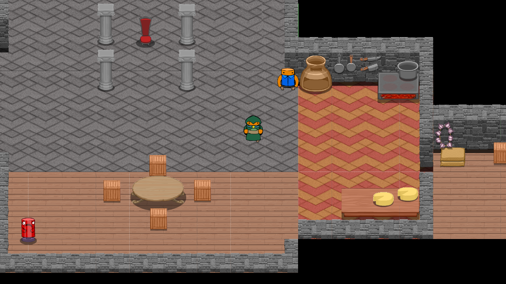
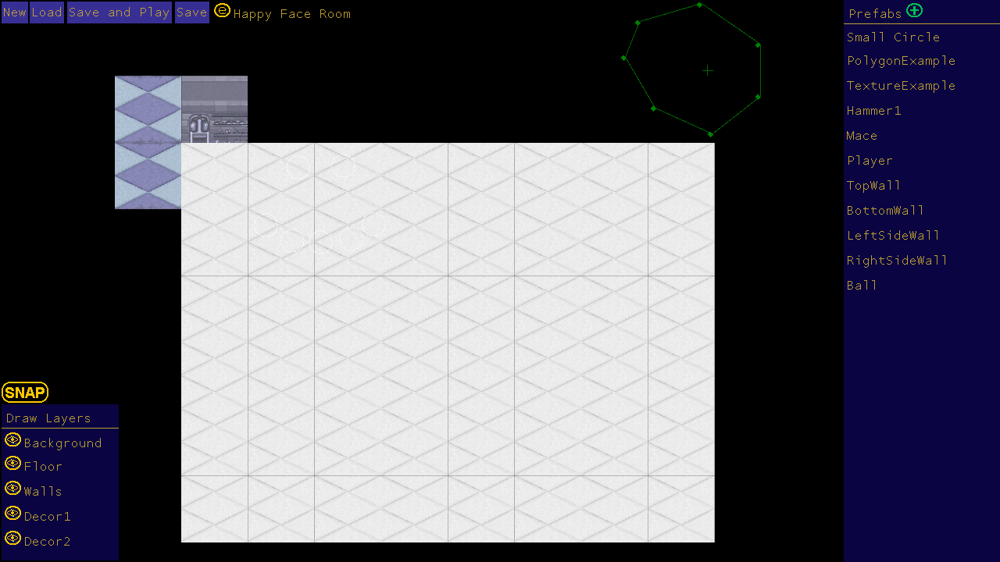
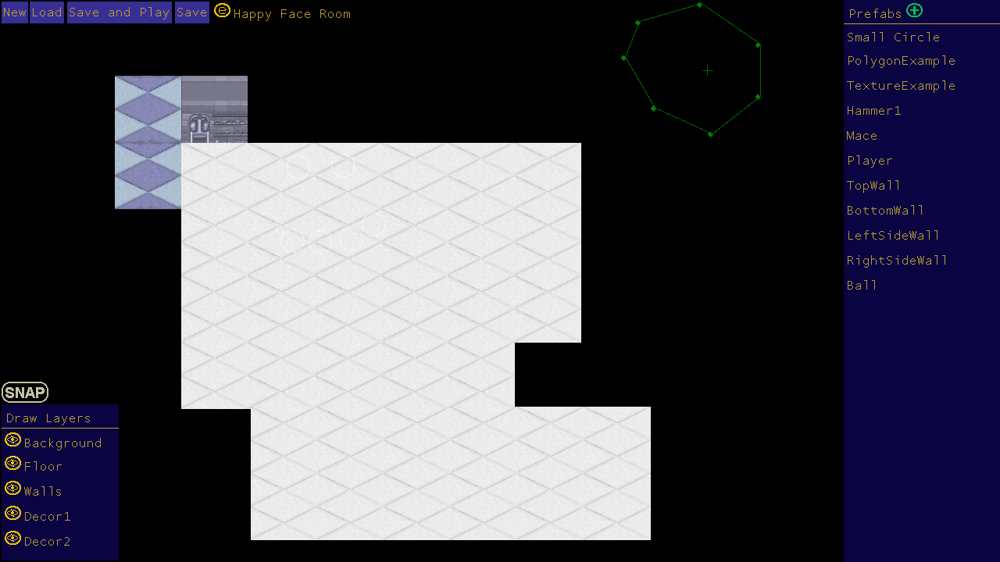
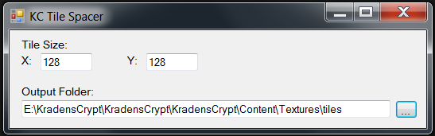

Nov 18, 2013Texture BleedingSam, Peter, (artists) and myslef (programmer) are currently working on a game titled Kradens Crypt. It's a 2D game built on the Monogame framework. We are early in the development cycle but hope to start producing levels soon. Peter started putting together a demo room last week and presented me with the following bug, where lines are drawing between the sprites (look at the floor tiles). I have seen this problem talked about before but have never had to fix it myself. After a little investigation I confirmed that, in the sprite sheet texture, colours were bleeding from each sprite into it's neighbours. This didn't show up earlier as all our other sprite sheets have similar coloured sprites. The first attempted fix was to add 2 pixels of transparent space between each sprite. I also had to update the image selector from our level editor to allow for padding between the images. The major downside of this solution is that we can no longer select groups of sprites from the sprite sheet. It was a step in the right direction but when looking at the result I quickly realized my error. Instead of putting transparent space between the sprites I filled that space with a copy of the pixels on the edge, now any sampling from the formerly transparent spacer would get the correct colour. Unfortunately were not done here. It was clear to me that having Sam and Peter spend time copying and pasting lines of pixels would be a ridiculous waste of effort. Redditor clintbellanger directed me towards the image editing tool Image Magick. On the Image Magick forums users snibgo and fmw42 helped me put together the following script. To simplify the process I put the script into a quick app to do the work for you. Just set the fields and drag the files on. This also produces a .grid file with some data required by our games sprite sheet loader. You can download the project here if you need this in your own project. You are also going to want to install Image Magick. I hope this post will help others who are having this problem. If you have a better way of dealing with texture bleeding I would love to hear from you. |
There and back again, an OOP tale Basic C# Auto Updater Pillars of Eternity is broken. A Silly Mistake Tweaking The Farseer Engine London Anime and Gaming Convention Sword Controls Update Texture Bleeding MoonBus Post Mortem Optimizing drawing with Sprite Sheets (Android) Space Crazy Prototype Android resource scaler my history with programming |
contact@hernblog.com
Follow @IanMakesGames